Navigating technology-rich learning environments.
A graduate e-portfolio by Dora María González — clinical psychologist, narrative practitioner, and language educator — tracing a year of study, practice, and conscious teaching with technology.
This is my professional learning journey through EDUC 5990. Rather than a folder of files you could just as easily click through on Moodle, this portfolio gathers the work of an entire course — readings, assignments, collaborative activities, and the quiet shifts that happen between them — into something that hopefully reads like a single, connected story.
Its purpose is to demonstrate the scope of my learning: how I engaged with the course materials, how the reflections changed me both professionally and personally, and how I am continuing to develop the competencies this course put in front of me — accessibility, leadership, inclusive design, and reflective practice in technology-rich educational spaces.
It is also a record of how I bridge theory and practice — how the readings, the UDL framework, the ethics of AI, and the literature on the digital divide have actually shown up in my present work as a teaching assistant at the TRU Language Learning Centre, and how I plan to carry them forward into the work that comes next.
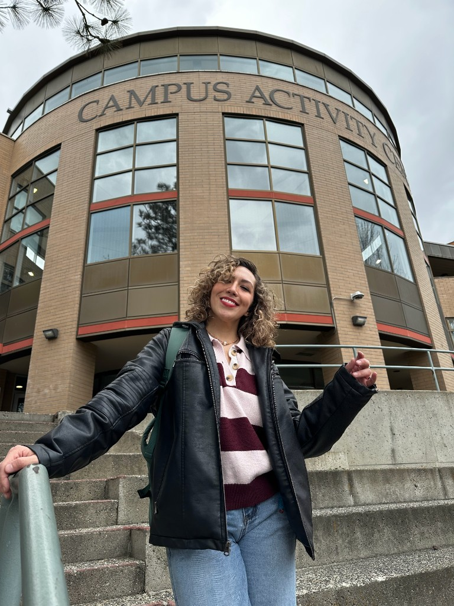
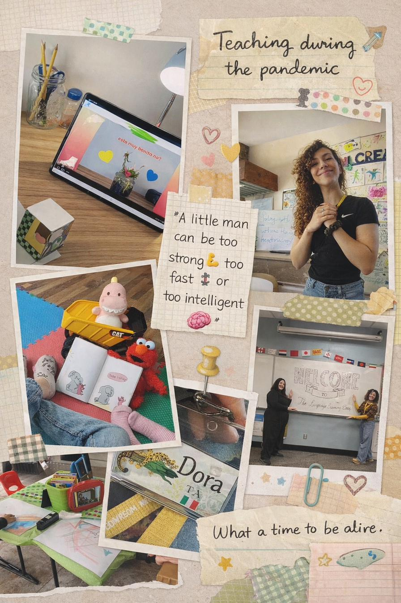
Land acknowledgement
As I continue to live, learn, work, and grow, I acknowledge that this work has been shaped on the ancestral, traditional, and unceded lands of the Secwépemc people. I offer my respect and gratitude to the Tk'emlúps te Secwépemc, as well as to all the Indigenous communities whose presence, knowledge, and stewardship continue to guide this land.
This acknowledgement is not only a statement, but a reminder of my responsibility as a learner and educator—to listen, to reflect, and to engage in ways that honor the histories, voices, and futures of Indigenous peoples.
A psychologist, then a teacher, then a learner — often all three at once.
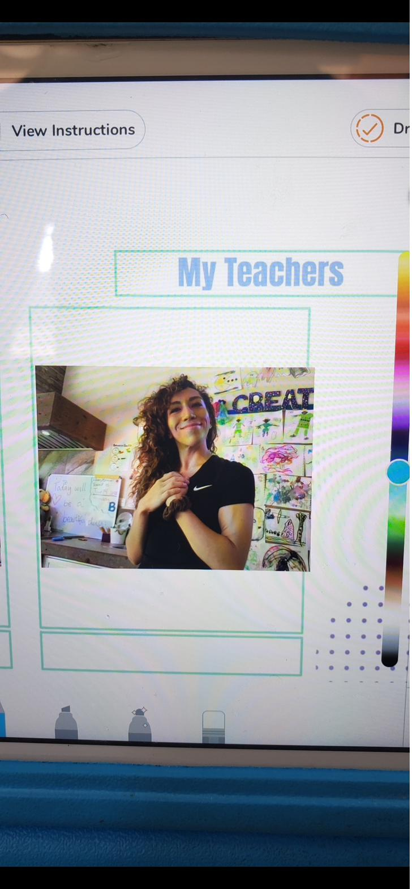
Background & transition
I earned my B.S. in Clinical Psychology and Health from the Instituto Tecnológico y de Estudios Superiores de Monterrey (Tec de Monterrey), where my work focused on child development and neurodivergent learners. I spent years sitting beside young patients and their families — listening for what wasn't being said, watching how a child related to a task, learning the shape of attention and dysregulation up close. That training is still the foundation of how I see learners.
After my degree, I contributed to the Eating Disorders Genetic Initiative (EDGI) Mexico at Comenzar de Nuevo, A.C., supervising clinical practicum students and facilitating psychoeducation workshops. I also completed a Diploma in Narrative Therapy with the Colectivo de Prácticas Narrativas — story-based, strength-focused, deeply relational work that has shaped how I listen to learners ever since.
The pandemic landed me in a strange new role: supervising children attending school online from home on iPads. I came in with a notebook, a pen, and a laptop — and almost no idea how the technology worked. I learned fast, because the children needed me to. That makeshift classroom became my first teaching life. I went on to spend years tutoring elementary, teen, and shadow-teaching neurodivergent learners — including a set of twin preschoolers with autism whose progress I tracked with their teachers, therapists, and parents.
I chose to come to Canada to study education because I wanted to formalize what I had been doing intuitively: education as preventive psychology. Not the banking model Freire warned us about, not memorizing things — but supporting children and young adults in learning how to learn, which is the part they will replicate for the rest of their lives.
I had very good teachers. One of them was Canadian, and somewhere in the back of my head I thought: that is the kind of support I want to offer learners when they grow up. Coming here is, in a way, my attempt to make good on that.
Where I am now
Today I am a Master of Education student at Thompson Rivers University and a teaching assistant at the TRU Language Learning Centre, where I run conversation clubs and drop-in tutoring for multilingual students. In April 2026 I designed and delivered a workshop on the conscious use of AI in language learning — the closest thing this portfolio has to a centerpiece, because it is where every thread of this course met a real student in a real room.
I am also currently engaged and living between Kamloops and Mumbai, where my partner's family speaks Hindi and Marathi. For the first time in a long time, I am not the fluent one. That experience reshaped Assignment 3 — and probably the way I'll teach for the rest of my life.
My teaching philosophy
My philosophy of education is relational, community-based, and rooted in scientific research — particularly developmental psychology and the ethics of how we relate to one another in change. Learning happens in relationship, and the work of teaching is the work of attending to that relationship while giving learners the tools to grow into themselves.
I believe in inclusive education as a non-negotiable starting point — not as an accommodation added afterward, but as the design from the beginning. Every learner I have worked with, from neurodivergent children to multilingual ESL adults, has reminded me that intelligence is not a single thing, and access to expression is not the same as having something to express.
I believe digital tools, used consciously, can encourage learners further into their education — as scaffolds, as bridges, as opportunities — but never as substitutes for thinking, voice, or human relationship. Conscious use is the whole point.
This is why I am especially drawn to Michael Fullan's work on educational leadership and change, which I am engaging with in Assignment 6: any meaningful technology integration is also a change-leadership problem, and change-leadership requires attending to the people the system is meant to serve.
Personal interests & aspirations
Writing
I am a writer, and a published one — co-author of Autobiografías Rebeldes (2024), an anthology centered on identity, social justice, and women's voices. I encourage my students to write because creative writing develops both language skills and the habit of human introspection.
Narrative practice
My Diploma in Narrative Therapy (Colectivo de Prácticas Narrativas, 2023) anchors how I listen to learners — story-based, strength-focused, collaborative. The same instinct that drew me to Freire pulled me here: people are the experts on their own lives.
Global citizenship
Education exists in a global frame: between Mexico, Canada, and India in my own life, and across the equity questions raised by the digital divide literature. I want to teach as a global citizen, not just a local one.
Future direction
I want to integrate technology and language learning thoughtfully — building practice that brings AI, UDL, and creative expression together for multilingual learners, in higher-education and community settings alike.
Half screens, half human presence.
My first reflection of this course — Assignment 1 — looked back at the moment the pandemic redrew my idea of what teaching even was. The phrase "half screens, half human presence" came out of that piece. It became the line I keep returning to whenever something in this course makes me question my practice.
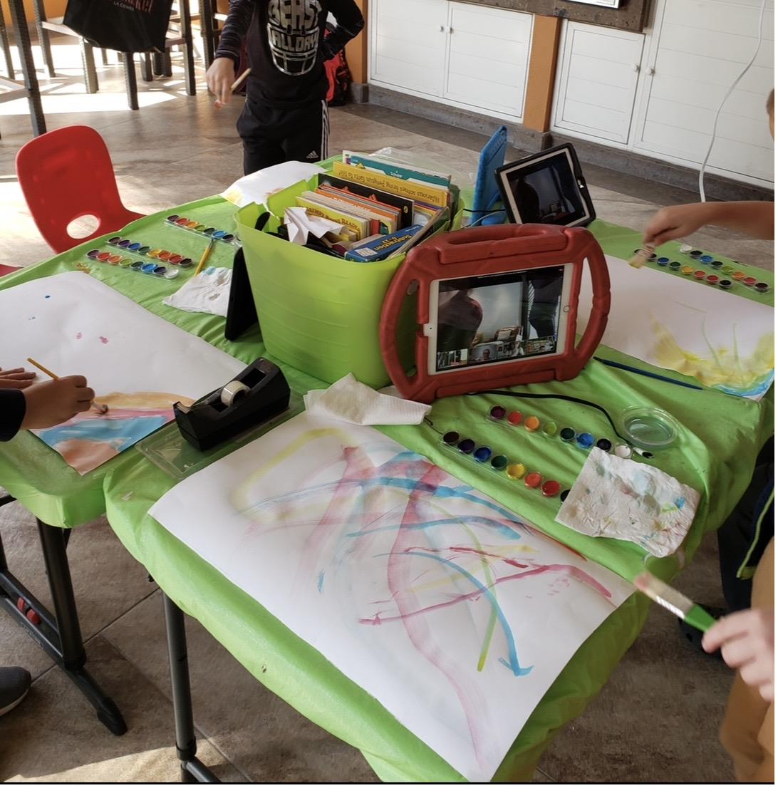
I met technology as a child when it was simply there — Encarta CD-ROMs, the modem screech, the family phone you couldn't tie up too long. Then the pandemic happened and technology became something else entirely: a window into the world, a lifeline, and sometimes a wall.
This first reflection was where I realized I had been a teacher all along — even when my degree said clinical psychologist. The pandemic classroom I built for those children was the seed of everything that came after. We hung posters, held morning circles, learned vocabulary together. Once, when a balloon floated up out of reach, we talked about grief. No app could help with that one.
In this new world: half screens, half human presence.
This portfolio is, in many ways, an attempt to live up to that line. Every section that follows — the philosophy, the assignments, the workshop, the reflections — is an answer to the same question: how do you teach with technology without losing the human at the center of it?
Education is never neutral. Technology even less so.
My philosophy of education was cracked open the moment I read Paulo Freire. The classroom is not a place where information is poured into students; it is a space where teacher and learner together construct meaning. Technology, used consciously, can deepen that — or destroy it.
In our making and remaking of ourselves in the process of making history — as subjects… not of pure adaptation to the world — we should end by having the dream, too, a mover of history. There is no change without dream, as there is no dream without hope.
— Paulo Freire, Pedagogy of Hope (2021, p. 95)
Social constructivism
Learning is socially mediated, scaffolded, and built through interaction. Vygotsky and Freire taught me that knowledge is not transmitted; it is co-constructed in conversation, in trust, in the small moments where a learner risks being wrong out loud. This is why a conversation circle matters more than a worksheet.
Voice as power
Freire reminded me that voice is tied to power, identity, and the right to tell one's own story. In language learning, this is everything. A multilingual learner is not a less-intelligent learner — they are a person whose access to expression is being mediated by the language of instruction.
Education as preventive psychology
My clinical training taught me to listen to a child before diagnosing them. Education, when it is done well, is preventive in the same sense — it gives learners the relational and cognitive tools they need before the difficulty arrives. This is the bridge between my old field and my new one.
Conscious, not passive
As a psychologist I care how humans think. As an educator I now carry responsibility for how learners relate to technology. AI in particular asks teachers to be intentional, not passive — to model critical use, protect cognitive struggle, and preserve learner voice in a world of frictionless generation.
Language learning, through technology, for variable learners.
Rather than presenting each assignment as a separate item to click through, I have gathered them where they actually live in my practice. The Language Learning Centre is where every concept I encountered in this course meets a real student with a real barrier. UDL, social constructivism, AI as a scaffold, the digital divide, leadership through change — these are not separate units for me. They are the layers of a single practice.
When language becomes the barrier: a UDL reflection on access, voice, and technology
Sitting at a dinner table in Mumbai, surrounded by my partner's family speaking Hindi and Marathi, I realized that my thoughts had not become less complex — only my access to expression had narrowed. That gap between what I know and what I can say became the lens for this reflection on multilingual learners at the Language Learning Centre.
Using the three UDL principles — multiple means of representation, expression, and engagement — I redesigned a traditional verbal-fluency-graded classroom around accessible digital tools: speech-to-text, captioned media, AI conversation partners, and bilingual scaffolds. Technology, when designed with intent, stops being a substitute for participation and becomes a bridge to it.
- Strangman, Meyer, Hall & Proctor — Improving Foreign Language Instruction with New Technologies and UDL
- Rao & Torres — Supporting Academic and Affective Learning Processes for ELLs with UDL (TESOL Quarterly, 2017)
- Fiori — Social Constructivism, UDL, and Instructional Design in the AI-Enhanced Spanish L2 Classroom
- Yang et al. — Leveraging Large Language Models to Create Learner Personas
Conscious AI at the Language Learning Centre: a case study in human-centered innovation
Assignment 2 analyzes the emerging pedagogical innovation I was participating in at the TRU Language Learning Centre: helping multilingual learners use AI consciously — as a scaffold for language practice, not as a replacement for voice, thought, or human interaction.
The case study identifies four connected goals: fostering language proficiency through meaningful interaction, building students' critical awareness of AI, promoting learner autonomy, and aligning AI-supported practice with inclusive UDL principles. In the LLC, this meant treating tools such as ChatGPT, Grammarly, NotebookLM, Langua, and ELSA Speak as possible supports for conversation preparation, vocabulary expansion, grammar clarification, pronunciation practice, and formative feedback.
The central argument is that technology becomes pedagogically meaningful only when it is intentionally designed into the learning relationship. AI can offer immediacy, personalization, and access beyond scheduled tutoring hours, but it also brings risks: over-reliance, academic integrity concerns, hallucinations, bias, and the possible loss of authentic student voice. The educator's role is therefore not reduced by AI; it becomes more important.
- Creely (2024) — generative AI opportunities and challenges in language learning
- Barbosa Jiménez & Saborio Barrantes (2024) — the relevance of UDL for English language beginners
- Özer (2024) — benefits and risks of AI in education
- Zaman (2023) — AI benefits, risks, and ethical considerations in education
Voice, technology, and reconciliation: amplifying survivor testimony in Project of Heart
Education is not neutral; it elevates some voices and silences others. Our team analyzed Project of Heart — a Canadian initiative that uses digital archives, video, and survivor testimony to put Indigenous voices at the center of reconciliation work. Drawing on Freire, we framed voice as inseparable from power and identity, and explored how digital archives like USC Shoah Foundation, Witness, and StoryCorps extend marginalized testimony beyond local audiences.
The critical edge: technology can amplify, but it can also flatten. A survivor's recorded testimony is not the same as the survivor in a room. Reconciliation requires listening, and listening requires presence. Technology is a help, not a substitute.
- Freire — Pedagogy of the Oppressed; Pedagogy of Hope
- Critical digital pedagogy for transformative practices in the Global South (literature review)
The challenge of disconnection: a critical review on rural schools and digital inequality
Ahiaku, Uleanya & Muyambi (2025) studied a rural school in KwaZulu-Natal, South Africa, where digital "disconnection" — a mix of geography, infrastructure, and socioeconomic constraint — turns the promise of educational technology into another marker of inequity. My critical review situated their case study against broader literature on the digital divide, examined the methodological strength of their qualitative case approach, and pushed back on the implicit assumption that more technology = more justice.
This review re-anchored my own thinking: technology integration cannot be sold as a sustainability story without also being told as an equity story. A tool only serves the learners who can pick it up.
- Ahiaku, Uleanya & Muyambi (2025) — Rural schools and tech use for sustainability
- Chikungwa-Everson (2024) — The impact of digitalisation on skills development in South Africa
- Information society and digital divide in South Africa — longitudinal surveys
AI innovation in the TRU Language Learning Centre: leading technology integration through change
Assignment 6 turns the LLC workshop into a change-leadership case. Our team asks why AI innovation is desirable in the Language Learning Centre: it can personalize feedback, increase access outside tutoring hours, support multilingual learners through multimodal tools, and help tutors identify common learning needs. But the presentation also names the human difficulty of adoption: staff uncertainty, fear of replacement, lack of confidence with AI tools, academic integrity questions, digital equity, and the risk of students becoming over-reliant on automated answers.
To make the change manageable, we frame AI integration through Fullan's view of educational change as complex, emotional, and non-linear; Rogers' diffusion of innovations to understand adoption and resistance; Kotter's 8-step model to build urgency, coalition, vision, communication, training, and short-term wins; and the SAMR model to move beyond simple substitution toward transformed language-learning practices.
The leadership conclusion is the same one that shaped the workshop: AI should not replace tutors or human teaching. It should enhance connection, feedback, confidence, and access — with clear guidelines, professional development, student feedback loops, and a designated AI champion to sustain the change over time.
- Fullan — educational leadership, coherence, and the changing nature of leadership
- Rogers / Sahin — diffusion of innovations and educational technology adoption
- Kotter — leading change and why transformation efforts fail
- Puentedura — SAMR as a way to evaluate depth of technology integration
AI, but make it conscious.
A workshop I designed and delivered to ESL students at the TRU Language Learning Centre on April 13th, 2026. This is where every thread of this course converged: leadership through change (Assignment 6), UDL for variable learners, social constructivism, ethical use of AI, and the conviction that students deserve a real conversation about the tools that are reshaping their learning.
A quick student guide to using AI without losing yourself.
When my supervisor John Turner assigned me an AI workshop alongside the mental health one, I took it precisely because I was the least qualified person in the room. I had arrived at TRU one semester earlier with a notebook and a pen, never having used ChatGPT. If I — a graduate student with full institutional support — had struggled, what were our undergraduates navigating alone?
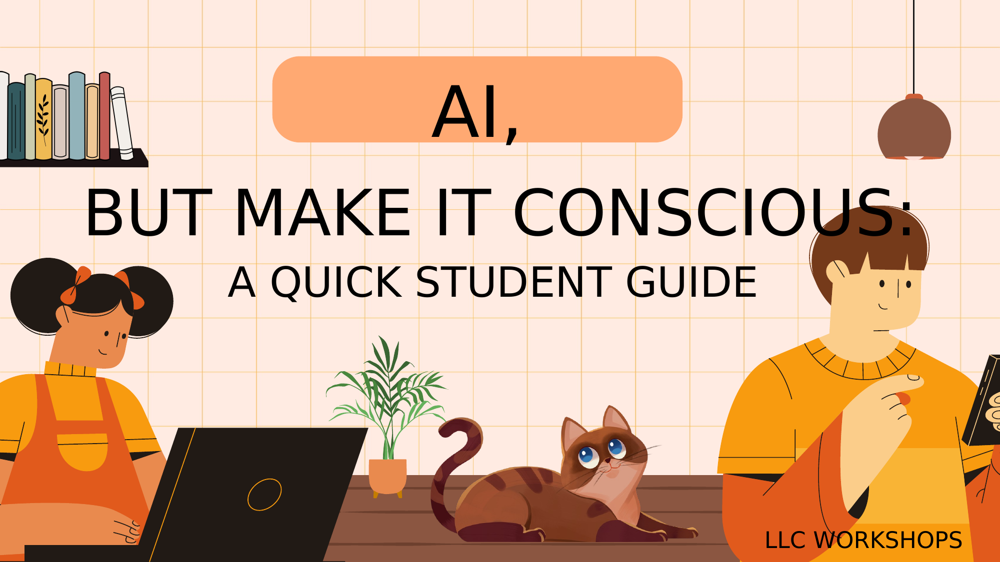
The starting point: I knew nothing
The first thing I did was tell Dr. Fovet I had been assigned this workshop and ask for help. He gave me thirty minutes on Zoom and connected me by email to four people across TRU who were thinking seriously about AI in education. I spent a semester interviewing them, reading, and figuring out what students were actually doing with these tools.
The mentors who shaped this
This workshop would not exist without these conversations. Each one moved me from "I have to give a talk" to "I have something to say."
The framework I built
From the interviews and the readings (especially Gignac & Szodorai on what intelligence actually is, and Ashok et al. on the ethics of AI in digital technologies), I built a five-part framework I called Conscious AI Use: Intentional · Critical · Supportive (not replacing thinking) · Authentic (your voice) · Responsible (you are accountable).
If you prompt it… it's still your work. You are responsible for what you submit, so always: review, edit, understand, cite it. — from the workshop, Slide 9
How Assignment 6 deepened the workshop
The Assignment 6 presentation gave the workshop a stronger leadership frame. Instead of presenting AI as a shiny new tool, it positioned AI integration at the LLC as a careful change process: start with learner needs, acknowledge staff uncertainty, build trust through training, and keep human tutors central to the model.
Our group proposed ChatGPT as a flexible first AI tool for the LLC because it can support grammar correction, vocabulary expansion, conversational practice, and explanations of complex language rules. But we also argued that successful integration depends on clear boundaries: protecting academic integrity, avoiding over-reliance, ensuring fair access, and creating regular feedback loops with both tutors and students.
Technology was not the center of the change. Trust, communication, professional identity, and student support were.
The activity that landed hardest
I asked students to create their own AI persona for language practice — a conversational tutor for the Conversation Circles I run at the LLC. We built prompts together: "Act as a friendly conversation partner. Help me practice English. Ask me questions and correct me gently." Then we improved them. This activity took everything I had been reading about — Yang's learner personas, Fiori's UDL-anchored AI design, Hockly's caution about chatbots — and put it in students' hands.
The moment I will not forget
During the discussion on resistance to new technology, an older student named David — fifty years old, from Guadalajara — spoke up. He told the room of 18-to-20-year-olds that he had lived through the normalization of computers, then the internet. "There has always been pushback when there is a new technology," he said. "Teachers wouldn't let you use a computer. Then they wouldn't let you use the web. They wanted books, and then typewriters."
For a workshop on AI delivered to a diverse multilingual audience, that single moment did more than any of my slides. It was the variability of learners that the UDL literature keeps insisting matters — made visible in the room, in real time. I didn't plan it. I just left enough room for it.
Workshop moments
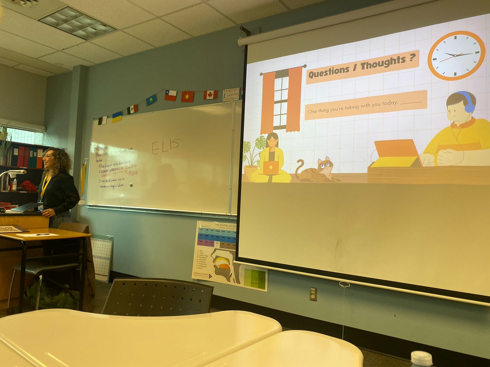
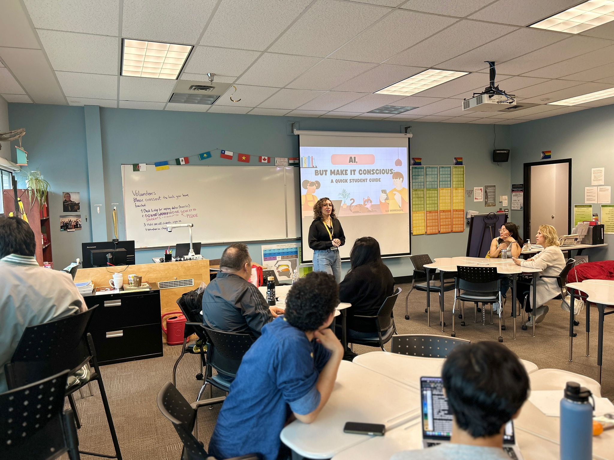
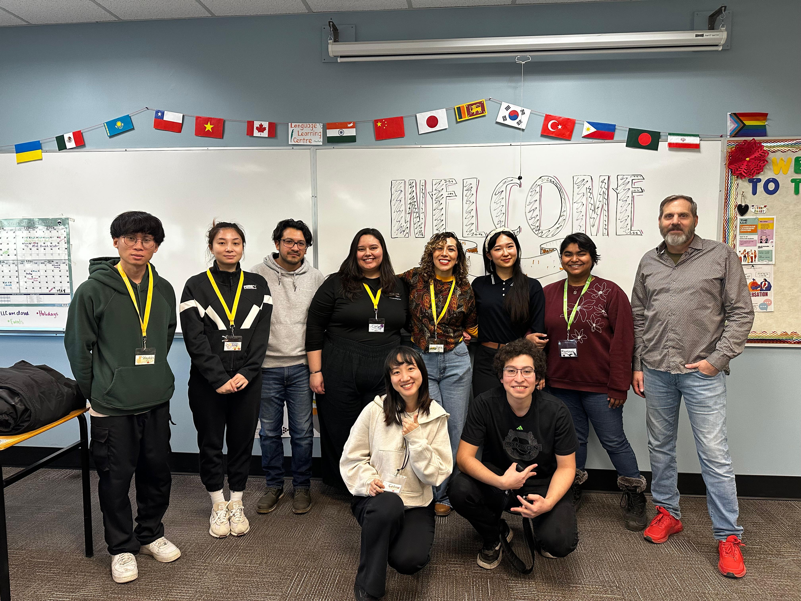
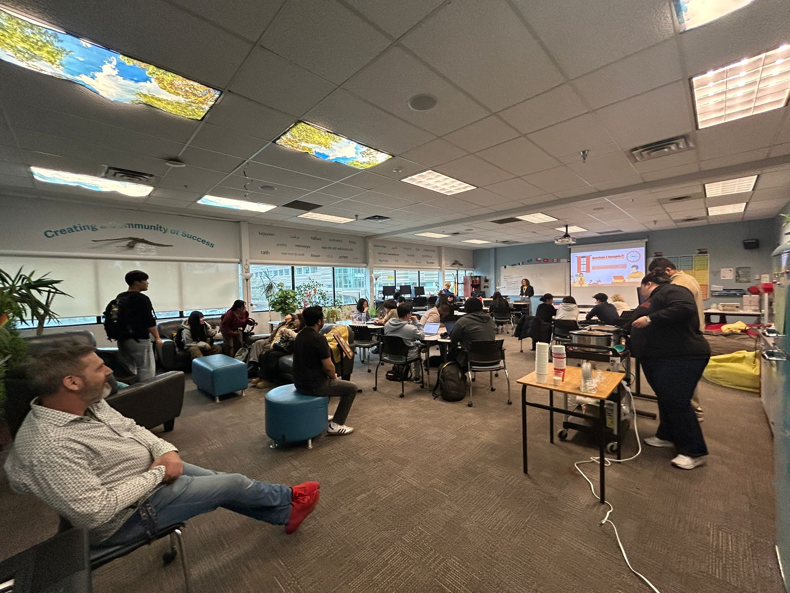
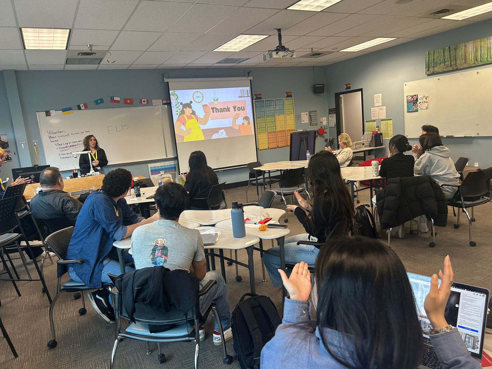
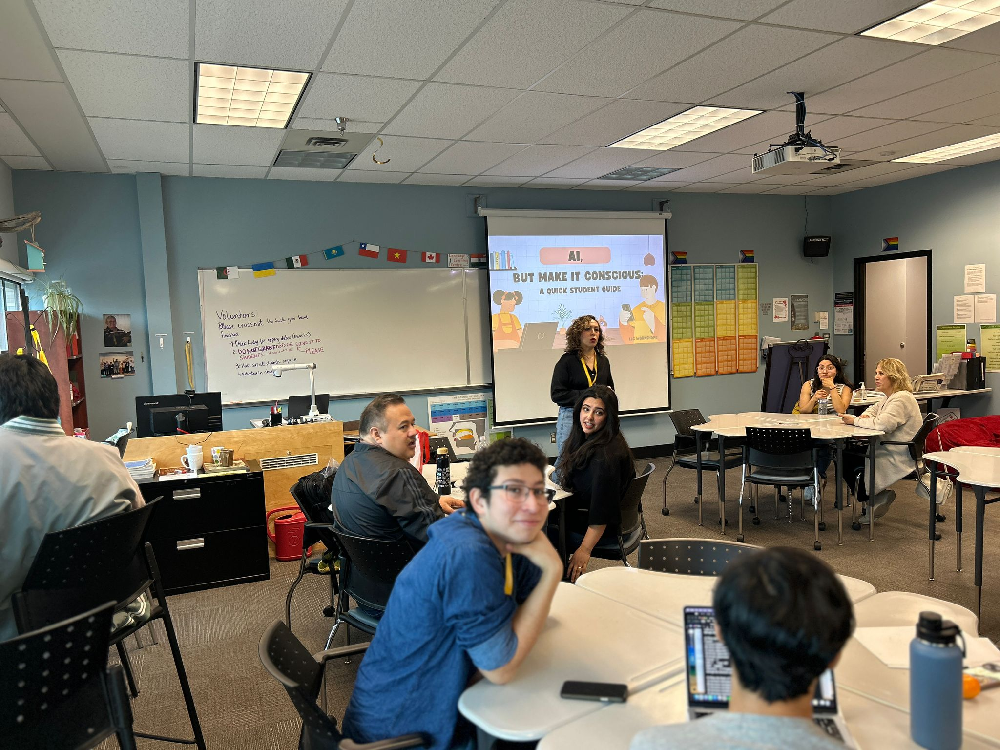
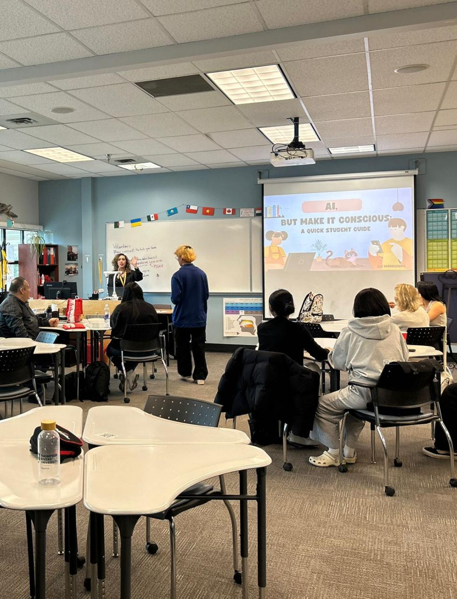
The thinking behind the assignments.
Two of the assignments in this course were explicitly reflective: Assignment 1 (the initial blog reflection) and Assignment 3 (the personal UDL reflection). I have placed them here, together, because they belong together. They bookend a semester of changes — not just in what I knew, but in who I was as a teacher.
What a Time to Be Alive
I met technology when it was just there. Encarta CD-ROMs, the modem screech, the family phone you couldn't tie up too long. Then the pandemic happened and technology became a window into the world.
This first reflection was the moment I realized I had been a teacher all along — even when my degree said clinical psychologist. The pandemic classroom I built for those children, half screens and half human presence, was the seed of everything that came after.
When Language Becomes the Barrier
This reflection was written from a dinner table in Mumbai. I had become the multilingual learner I had been teaching — the one who understands more than they can say, whose participation is mediated by tools, gestures, and patience.
Assignment 3 was where the course content stopped being abstract. UDL is not a checklist; it is a moral position about whose intelligence we are willing to recognize.
What I'll do differently as a language teacher.
An e-portfolio is not a museum. The point of this course was to change my practice — and it has. Here is what I am taking with me into the conversation circles, the workshop room, and any classroom I am lucky enough to lead next.
Design conversation circles around variability, not the average learner
UDL has stopped being a framework I read about. It is the lens I now apply when I plan a Conversation Circle: who is in the room, what does each of them need to express themselves, where does technology lower a barrier, and where does it create a new one?
Teach AI literacy as part of language learning, not as a separate topic
The workshop I gave at the LLC will become a recurring component, not a one-off. I want every Conversation Circle student to leave knowing how to use AI as a thinking partner without surrendering their voice to it.
From pilot to a series at the LLC
With my supervisor John Turner, we framed that first AI workshop as a pilot — intentional permission to sketch a wide map before going deep. At the Language Learning Centre we mean to turn it into the first of a series: over the summer and in future semesters we plan to revisit each topic we only touched briefly, offer workshops focused specifically on AI tools for language learning, and run stand-alone sessions that walk learners through activities we sampled once together — especially building an AI persona for conversational English practice.
Centre voice, especially when it is hard to hear
From Freire, from Project of Heart, from David in my workshop, from my own evenings in Mumbai: the most important pedagogical move is leaving room for the learner whose access to expression is restricted, and trusting that what they have to say is worth waiting for.
Refuse the equity-blind story of educational technology
The Ahiaku critical review changed how I will talk about EdTech in any room I am in. Tools do not deliver equity. They expose the gaps in it — and the work happens in those gaps.
Lead change the way Fullan describes it
I want to bring Fullan's lens — leadership grounded in moral purpose and the people the work actually serves — into any institution I work in. Not because I aspire to a leadership title, but because every teacher leads change in their own room every day.
Stay a learner, especially about AI
Brian Lamb was right — we are all figuring this out as it goes. My commitment is to keep reading, keep interviewing, keep asking my students what is actually happening in their notebooks and on their screens, and to let that update the next workshop, the next reflection, the next portfolio.
Feel Free to Reach Out with Any Questions or Ideas.
Prefer email directly? d.gonzalez1191@gmail.com · Kamloops, British Columbia
Everything that made this thinking possible.
In APA 7. Course readings and the additional sources I drew on for the workshop and assignments are organized by theme.
- Barbosa Jiménez, K., & Saborio Barrantes, K. (2024). The relevance of UDL in English language beginners. REVISTAINCAING, 7(45), 96–102. https://www.ojsincaing.com.mx/index.php/ediciones/article/view/387
- Fiori, M. (n.d.). Social constructivism, UDL, and instructional design in the AI-enhanced Spanish L2 classroom.
- Rao, K., & Torres, C. (2017). Supporting academic and affective learning processes for English language learners with Universal Design for Learning. TESOL Quarterly, 51(3), 460–472.
- Strangman, N., Meyer, A., Hall, T., & Proctor, P. (2005). Improving foreign language instruction with new technologies and Universal Design for Learning. IALLT Journal of Language Learning Technologies, 37(2).
- Yang et al. (n.d.). Leveraging large language models to create learner personas.
- Ashok, M., Madan, R., Joha, A., & Sivarajah, U. (2022). Ethical framework for Artificial Intelligence and Digital technologies. International Journal of Information Management, 62, 102433. https://doi.org/10.1016/j.ijinfomgt.2021.102433
- Creely, E. (2024). Exploring the role of generative AI in enhancing language learning: Opportunities and challenges. International Journal of Changes in Education, 1(3), 158–167. https://doi.org/10.47852/bonviewijce42022495
- Eden, C. A., Chisom, O. N., & Adeniyi, I. S. (2024). Integrating AI in education: Opportunities, challenges, and ethical considerations. Magna Scientia Advanced Research and Reviews, 10, 6–13.
- Floridi, L., et al. (2018). AI4People—An ethical framework for a good AI society: Opportunities, risks, principles, and recommendations. Minds and Machines, 28(4), 689–707. https://doi.org/10.1007/s11023-018-9482-5
- Gignac, G. E., & Szodorai, E. T. (2024). Defining intelligence: Bridging the gap between human and artificial perspectives. Intelligence, 104, 101832. https://doi.org/10.1016/j.intell.2024.101832
- Hockly, N. (2023). Artificial intelligence in English language teaching: The good, the bad and the ugly. RELC Journal, 54(2), 445–451.
- Microsoft. (n.d.). How does generative AI work? Retrieved from https://www.microsoft.com/en-us/ai/ai-101/how-does-generative-ai-work
- Özer, M. (2024). Potential benefits and risks of artificial intelligence in education. Bartın Üniversitesi Eğitim Fakültesi Dergisi, 13(2), 232–244. https://doi.org/10.14686/buefad.1416087
- Thompson Rivers University. (n.d.). Student AI. https://studentai.trubox.ca/
- Thompson Rivers University Library. (n.d.). Artificial intelligence libguide. https://libguides.tru.ca/artificialintelligence/home
- Zaman, B. U. (2023). Transforming education through AI, benefits, risks, and ethical considerations. https://doi.org/10.36227/techrxiv.24231583.v1
- An, Y., Kaplan-Rakowski, R., Yang, J., Conan, J., Kinard, W., & Daughrity, L. A. (2021). Examining K-12 teachers' feelings, experiences, and perspectives regarding online teaching during the early stage of the COVID-19 pandemic. Educational Technology Research and Development, 69(5), 2589–2613.
- Jiménez Ramírez, G. Y., Cortes Flores, A., & De Luna Jiménez, M. (2024). Estrategias de acompañamiento familiar en la educación preescolar durante el contexto mexicano de la pandemia. Actualidades Investigativas en Educación, 24(3), 1–33.
- Prado-Gascó, V., Gómez-Domínguez, M. T., Soto-Rubio, A., Díaz-Rodríguez, L., & Navarro-Mateu, D. (2020). Stay at home and teach: A comparative study of psychosocial risks between Spain and Mexico during the pandemic. Frontiers in Psychology, 11.
- Early childhood development in México before and after COVID-19. (n.d.).
- Ahiaku, P. K. A., Uleanya, C., & Muyambi, G. C. (2025). Rural schools and tech use for sustainability: The challenge of disconnection. Education and Information Technologies, 30, 12557–12571.
- Chikungwa-Everson, T. (n.d.). The impact of digitalisation on skills development in South Africa: A comparative analysis.
- Critical digital pedagogy for contemporary transformative practices in the Global South: A literature review. (n.d.).
- Information society and digital divide in South Africa: Results of longitudinal surveys. (n.d.).
- Brown, A. (2026). Personal communication, interview on AI use and academic integrity at TRU.
- Fovet, F. (2026). Personal communication, interview on AI integration and educational technology at TRU.
- Fullan, M. (2020). The nature of leadership is changing. European Journal of Education, 55(2), 139–142. https://doi.org/10.1111/ejed.12388
- Fullan, M., Azorín, C., Harris, A., & Jones, M. (2024). Artificial intelligence and school leadership: Challenges, opportunities and implications. School Leadership & Management, 44(4), 339–346. https://doi.org/10.1080/13632434.2023.2246856
- Guskey, T. R., & Yoon, K. S. (2009). What works in professional development? Phi Delta Kappan, 90(7), 495–500.
- Kotter, J. P. (2007). Leading change: Why transformation efforts fail. Harvard Business Review.
- Lamb, B. (2026). Personal communication, interview on AI expertise and institutional use at TRU.
- Patnaik, P., & Bakkar, M. (2024). Exploring determinants influencing artificial intelligence adoption: Reference to diffusion of innovation theory. Technology in Society, 79, 102750. https://doi.org/10.1016/j.techsoc.2024.102750
- Piao, P. (2026). Personal communication, interview on AI use in language learning and student support at TRU.
- Puentedura, R. (2020). Thinking about SAMR: Two-pass ladders [PDF]. Hippasus.
- Sahin, I. (2006). Detailed review of Rogers' diffusion of innovations theory and educational technology-related studies based on Rogers' theory. The Turkish Online Journal of Educational Technology, 5(2), 14–23.
- Thiers, N. (2017). Making progress possible: A conversation with Michael Fullan. Educational Leadership, 74(9), 8–14.
- Freire, P. (1970). Pedagogy of the oppressed. Continuum.
- Freire, P. (2021). Pedagogy of hope: Reliving pedagogy of the oppressed (Reprint ed.). Bloomsbury Academic.
AI use disclosure
In the creation of this e-portfolio, artificial intelligence tools were used to support the organization of ideas, clarity of expression, and initial brainstorming. Consistent with a human-centered and ethical approach to technology, AI was engaged as a collaborative tool rather than a substitute for thinking. All reflections, critical analysis, and interpretations presented here are my own, shaped by my academic, professional, and personal experiences.
NonCommercial
ShareAlike 4.0
Licensing & accessibility
This e-portfolio by Dora María González is licensed under a Creative Commons Attribution-NonCommercial-ShareAlike 4.0 International License (CC BY-NC-SA 4.0). You are free to share and adapt this work, provided you attribute me, do not use it for commercial purposes, and share any derivative work under the same license.
This site has been designed with the principles of Universal Design for Learning in mind. It offers multiple means of representation (descriptive alt text on every image, sufficient color contrast, scalable typography), action and expression (a skip-to-content link, full keyboard navigation, visible focus indicators, optional text-to-speech for long reading), and engagement (text-size and high-contrast controls in the lower-left corner, a simple portfolio guide chat for directions, and respect for the prefers-reduced-motion system setting). If anything on this page is hard to access, please let me know — accessibility is not a finished state, it is a practice.